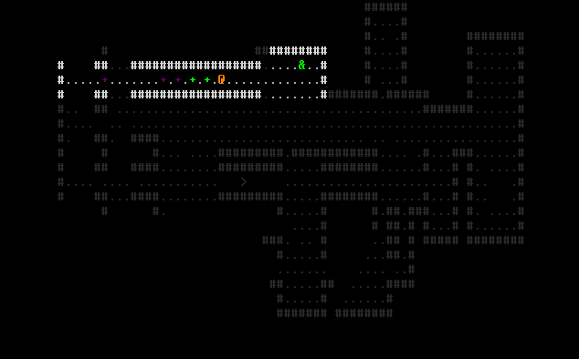
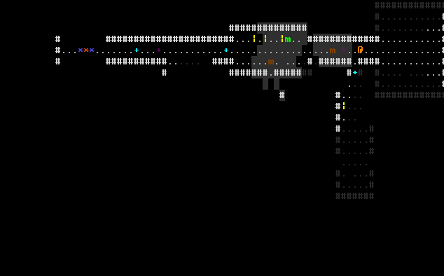

Deep Geo Devlog
Development blog for an ASCII monster-collecting roguelike with genetics.
Week 2: Switches and Monsters
Continuing our theme of interesting non-combat roguelike mechanics, this week, I implemented switch-puzzles, and hunting monsters.
Switch Puzzles
In every dungeon, the player finds a number of locked doors that are colour-coded (eg. either green or purple), and a couple of switches. Flipping the switch toggles between the two, either opening all the green doors (while locking all the purple doors) or opening all the purple doors (while locking all the green doors).

Monsters
One mechanic I planned to implement early-on is something skin to stealth: monsters see a range around them, and travel from point to point; if they see you, they chase you until they lose sight of you. This week, I added the sight (transparent white squares) and chasing (monsters turn red when they see you).
In the GIF below, you can see the brown monster chasing, while the green monster (left side of the screen) continues about its business.

For next week, I plan to have monsters give up after losing sight of you for a while, and I plan to add some combat-like moves the player can use to evade capture.